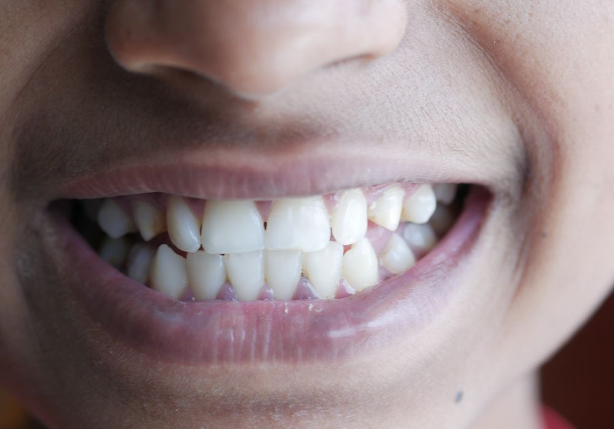
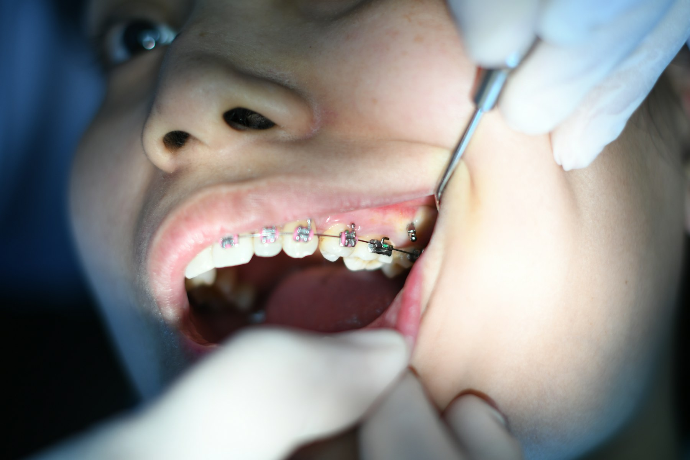
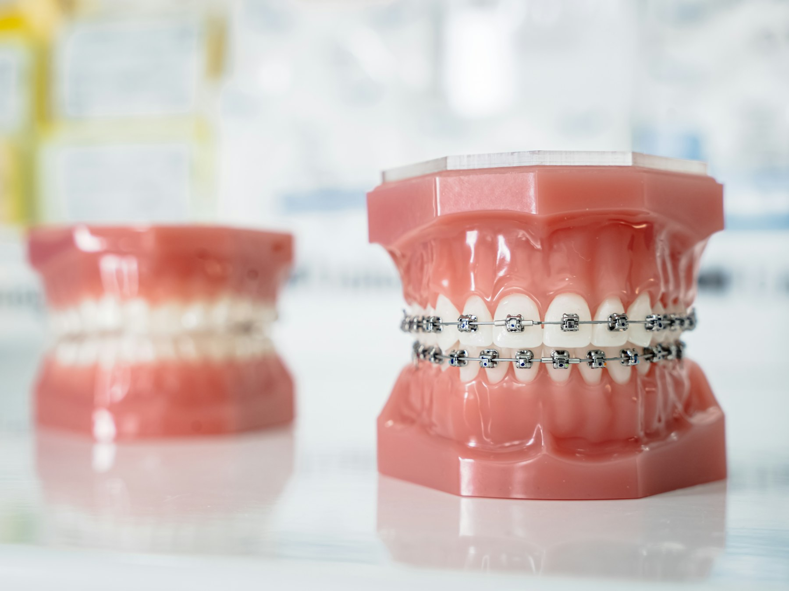

Niềng răng
Đưa từng chiếc răng về đúng vị trí — cho nụ cười đều, khớp cắn chuẩn và gương mặt hài hoà hơn.

◂ Kéo để so sánh Trước / Sau ▸
Hình ảnh chỉnh nha
Cận cảnh niềng răng

Kiểm tra mắc cài
Ảnh: Atikah Akhtar / Unsplash
Cấu tạo mắc cài
Ảnh: Katarzyna Zygnerska / UnsplashGiải pháp
Các phương pháp niềng
Mắc cài kim loại
Bền, hiệu quả cao với chi phí hợp lý — lựa chọn kinh điển cho mọi ca chỉnh nha.
Mắc cài sứ
Màu sứ trùng răng, thẩm mỹ hơn mắc cài kim loại mà vẫn giữ hiệu quả tốt.
Khay trong suốt
Gần như vô hình, tháo lắp linh hoạt, ăn nhai và vệ sinh dễ dàng.
Bắt đầu